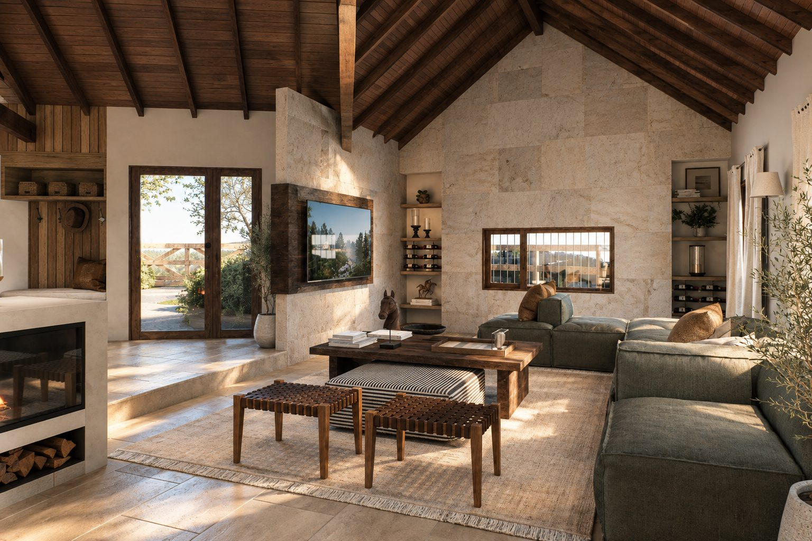
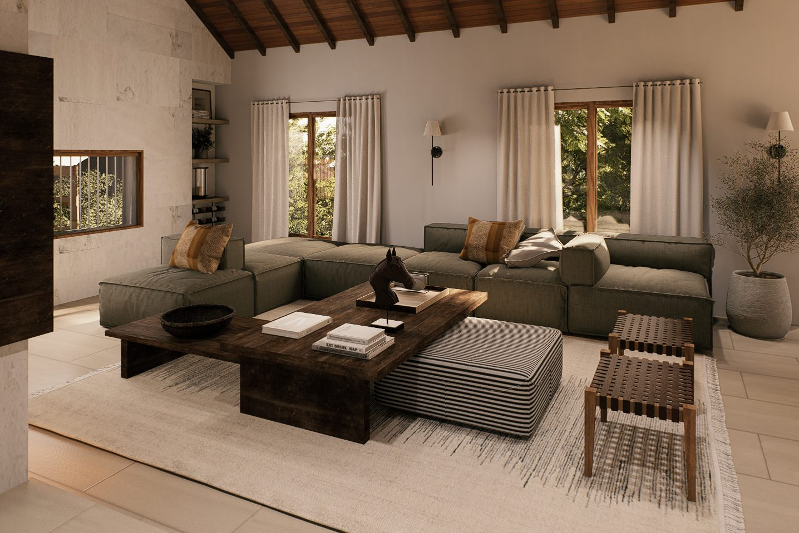
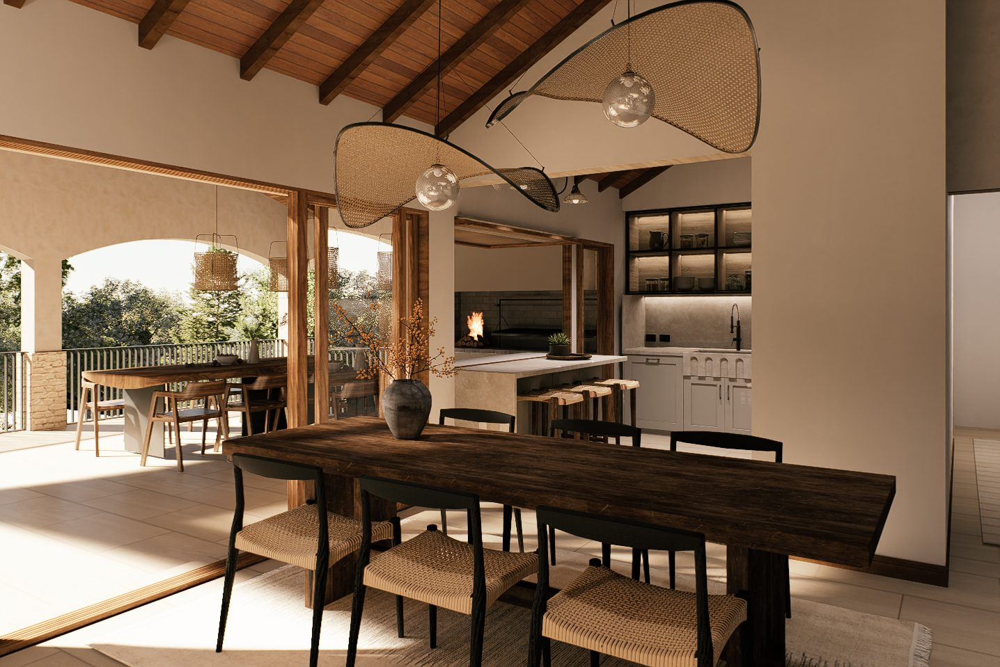
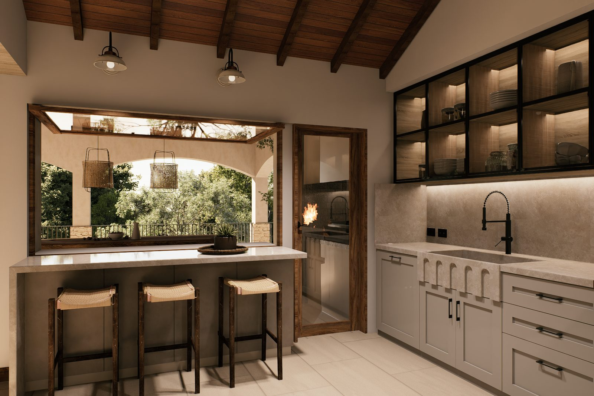
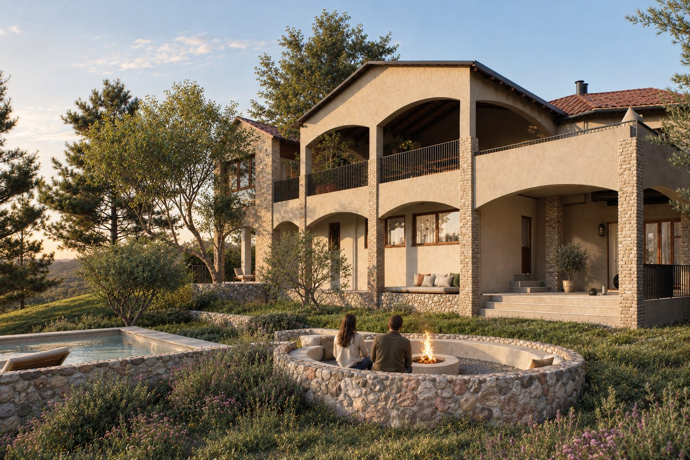
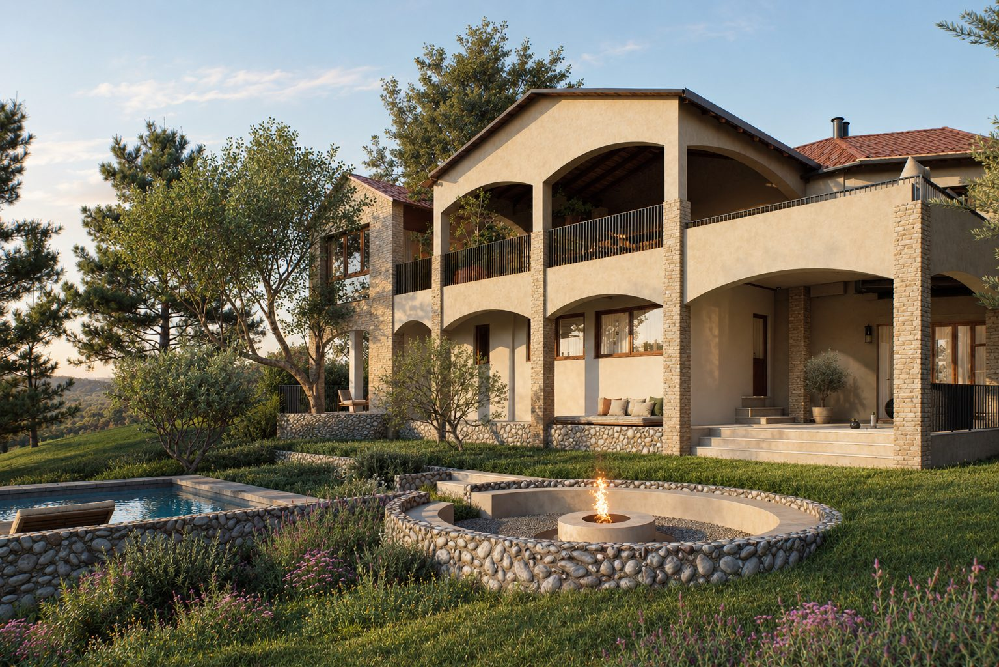
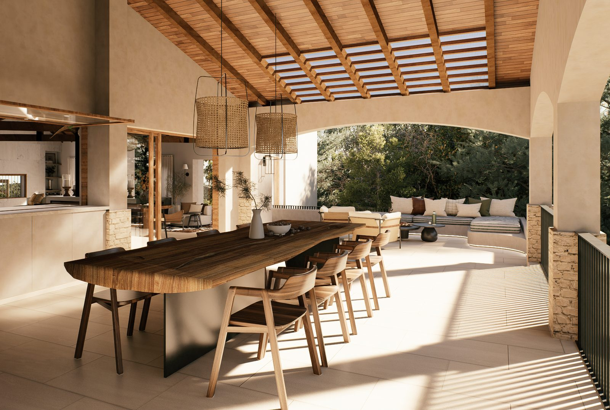
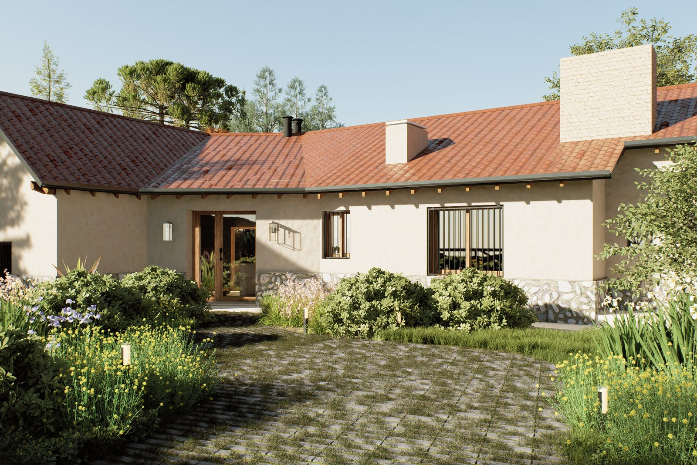
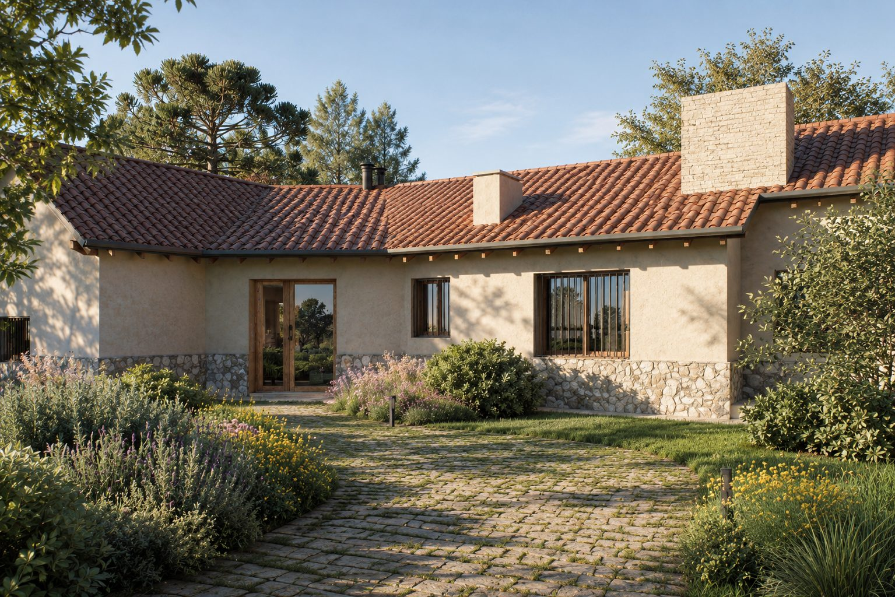

Remodelación de vivienda · render 3D
Remodelación casa Cuesta Blanca
Remodelación con piso de porcelanato claro, galería ampliada y cocina conectada al comedor
- Año
- 2025
- Lugar
- Barrio Sierra Nueva, Mendiolaza









